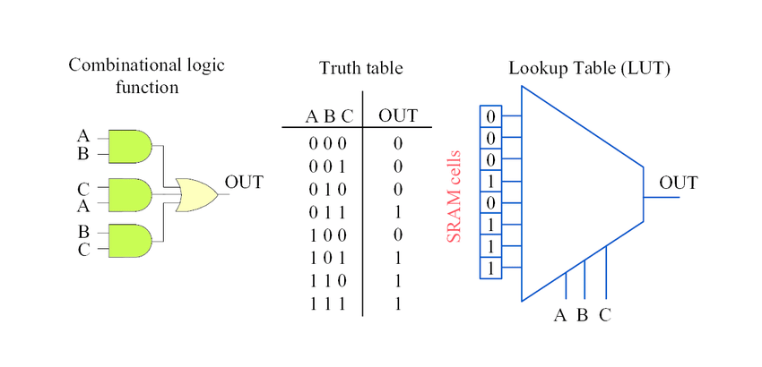
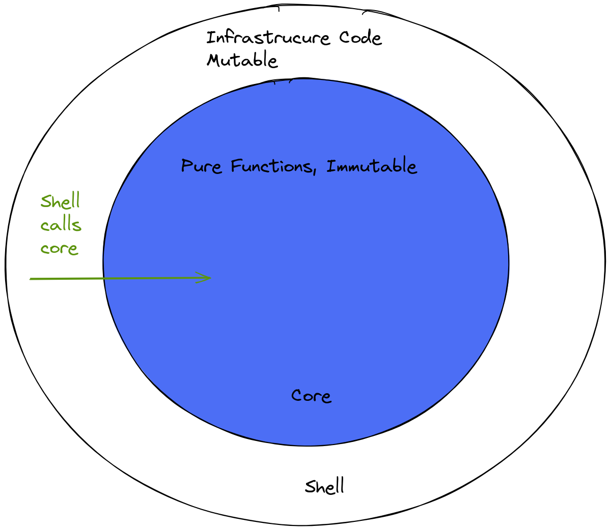

前言
这个学期包含编译系统和算法设计与分析两门专业课，遇到一些问题总会想着放在 Haskell 里实现一下，对于程序构造多少有点新的体会，也度过了对于 Haskell 不平静的狂热期，现在的我已经不会想着到处传教了（☺️）. 本来只是准备随便写写做 0-1 背包的 Haskell 实现中的一些小思考，不过真开始动笔了就越写越正式了，也算是接触 FP / Haskell 以来的一点点小总结. Haskell 官网 对 Haskell 的描述是 “An advanced, purely functional programming language”，本文试图围绕 “purely” 做一些讨论：什么是纯，怎么样算不纯，追求纯度的理由是什么，纯度带来的效益是什么.
首先从 0-1 背包的过程式实现出发，我把过程式实现 1:1 投射到 Haskell 里，感觉这段代码不是很符合 Haskell 的气质（😯），于是回到了递推式，回到了算法课上一笔带过的递归实现，对过程式语言的递推实现和函数式语言的递归实现做了一些比较，看看两者对于“如何避免重复计算的开销”这个问题（不局限于 0-1 背包问题）给出的不同答案，前者利用源代码上的记忆数组，后者则可以利用纯函数的特性，通过求值策略实现减少重复计算.
一段算法设计与计算模型的讨论：从 0-1 背包问题这个例子里也可以看出"算法设计"其实是不完全独立于编程范式的，也许更合适的说法是，算法设计强相关于物理计算机的实际运行方式，毕竟算法设计除了解决问题，还有一个追求是降低在物理机上运行时的时空计算资源消耗，这和命令式语言的特性是相契合的，而函数式语言有点 Lambda Calculus 虚拟机的意思；比如复杂度的计算，直接把命令式程序的时间复杂度计算方式照搬给函数式程序是有问题的，前者的理论基础是图灵机 - 状态转移次数，后者的理论基础是 $λ$ 演算 - 规约次数，计算模型的不同势必带来一些差异. 因为我们使用的计算机采取冯诺依曼体系结构，即 图灵机的物理实现，所以算法课也采用更接近硬件的命令式的编程范式，还是很合理的. 不由得想起大一上 CPP 程序设计时老师说 “只要冯诺依曼体系结构还存在，我们就…(后半句忘了)”，不知不觉我已经尝试走了走另一条路. 说起函数式语言的机器这件事情，其实 1970s,1980s 有学者为函数式的语言设计过专门的非冯诺依曼机器（combinator machine, dataflow machine, etc.），后来大家发现在效率的方面，现有机器 + 好的编译器 > 专用机器，可参考 A History of Haskell: Being Lazy With Class, Part I - 2.1
命令式程序如何避免重复计算
关于过程式的 0-1 背包，你熟悉到几乎可以默写的一段程序：
- 回忆：使用
dp数组，而不是递归的原因是 —— 将递归转为迭代，避免重复计算；另一种陈述是将函数调用dp(i, j)的结果存储到内存中的数组dp[i][j]里，实现记忆化.
int knapsack(int n, int* weight, int* value, int capacity) {
int dp[n+1][capacity+1];
// INIT: BASE CASE//
for (int j = 0; j <= capacity; j++)
dp[0][j] = 0;
for (int i = 0;i <= n;i++)
dp[i][0] = 0;
// DP //
for (int i = 1; i <= n;i++) {
int w = weight[i], v = value[i];
for (int j = 1; j <= capacity; j++) {
if (j < w) dp[i][j] = dp[i-1][j];
else dp[i][j] = max(dp[i-1][j], dp[i][j-w]+v);
}
}
return dp[n][capacity];
}
将上述代码 1:1 翻译成 Haskell 程序，你将得到：
import Data.Array
type Value = Int
type Weight = Int
type Item = (Value, Weight)
knapsack01 :: Weight -> [Item] -> Value
knapsack01 capacity items = dp ! (n, capacity)
where
n = length items
dp = array((0,0), (n,capacity))
[((i, w), step i w) | i <- [0..n], w <- [0..capacity]]
step 0 _ = 0
step _ 0 = 0
step i w
| curWgt > w
= dp ! (i - 1, w)
| otherwise
= max (dp ! (i - 1, w)) (curVal + dp ! (i - 1, w - curWgt))
where curVal = fst $ items !! (i - 1)
curWgt = snd $ items !! (i - 1)
写的时候感觉不太对劲，第一感觉是：这两段代码没有区别. 这就是在函数式的语言里写命令式程序. 周五晚上我从炸鸡店走出来的时候，有了一些新的想法：
函数式程序如何避免重复计算
当我们不能像过程式语言那样在内存条里随机存取的时候，当我们建立起一层层抽象的时候，如何追求性能呢？除了在 CSAPP 第五章里学习利用局部性、循环展开、提高并行性等方法，还有什么方式可以提高程序的性能？除了程序员本身从源代码层面提高性能，还可以在哪里优化性能？编译器从程序员手上接管代码，编译器可以做什么？
0-1 背包：回到起点
所有物品为 $items$，规模为 $N$, 物品属性为价值 $v_i, w_i$，背包总容量为 $W$，定义 $z(i, j)$ 为可选物品为 $items[1..i]$，背包容量为 $j$ 时，可获得的最大价值，那么
- 递推基：$\forall i, j,\quad z(i, 0) = 0, z(0,j) = 0;$
- 递推步：$z(i,j) = max(z(i-1, j), v_i + z(i-1, j-w_i));$
- 目标值：$z(N, W)$
毫无疑问这是递归的结构，在 Haskell 里写递归实现，如同呼吸般自然：
（NOTE：1. 看到这里也许你已经开始担忧重复计算、内存占用的事情了 ；2. 值得稍稍注意的一点是，这一段代码完全不涉及基于索引的数据存取）
type Item = (Value, Weight)
knapsack :: [Item] -> Int -> Int -- items + capacity -> maximal value
knapsack _ 0 = 0
knapsack [] _ = 0
knapsack ((v,w):items) c =
let
choose = v + knapsack items (c-w) -- choose current item
chxxse = knapsack items c -- not choose current item
in
if w > c then chxxse else max choose chxxse
严格求值 - 不递归的理由
在背包问题的 C++ （严格求值语言）实现中，我们不用递归的理由是对于性能的追求，因而使用 dp[i][j] 用空间换时间，将递归中的重复计算转换为数组的索引访问. 这个记忆化的工作，除了我们自己做（也就是使用 dp 数组），还可以 —— 交给编译器. 当然这种形式的记忆化就不是在源代码层面上呈现一个记忆数组了，而是通过求值策略来实现. 在讨论求值策略前，先看看什么是纯函数.
对于 " 纯 " 函数的讨论
-
函数是什么？/ 函数的表示法 / LUT 的类比 / 编译器行为 / 纯函数的求值策略
—— 多年以后，面对 “函数式程序设计”，🐟将会回想起数学老师带她去见识函数的那节遥远的数学课.
函数是一种映射关系. 体现这种关系的方式，即 函数的表示法，除了函数表达式、函数图像，还有表格.
如果我们需要一台机器来执行定义域为某有穷集的完全平方函数
f(x, y) = x*x + y*y，除了依赖加法器、乘法器构成的组合逻辑电路，我们还可以用 LUT（LookUp Table），虽然听起来有点离谱，但是它的可行性是不可否认的.NOTE: 可能产生的疑惑 - 如何确定 / 如何描述电路实现的函数与我们预期的函数之间的等价性？或者说，我们预期的是函数 $f$，电路实现的是函数 $f’$，如何确定 $f’ \equiv f$？如果你对 $λ$ 演算（逻辑学）中函数等价的形式化理论感兴趣，可以参看 Lambda Calculus and Combinators, an introduction - Chapter 5~8. 这里 LUT 实现的函数 $f_1’$ 与预期函数 $f$ 外延等价（extensional equivalence），组合逻辑实现的函数 $f_2’$ 与预期函数 $f$ 内涵等价（intensional equivalence）.
我们习惯的编译器的行为大致是：看到函数+参数 → 放入组合逻辑电路计算；如果只依赖映射表（LUT），那么编译器的行为大致是：看到函数+参数 → 在 LUT 中查找对应输出，这需要 LUT 存储好所有函数输入对应的输出，于是压力给到 LUT；折中的策略是，第一次见到函数+参数时，利用组合逻辑电路计算，并缓存到 LUT，再次见到这组函数+参数，直接在 LUT 中查找.（函数式有自己的高速缓存:）
-
子过程与函数 / 副作用与纯度
这里我们用函数指代“纯”函数（定义见下），将非纯的过程称为子过程.
使用 LUT 实现函数的前提是：函数是纯的，即对相同的输入总是返回相同的输出，并且不产生副作用. 形象地说，我们希望 LUT 是严格的，IN / OUT 引脚保持干净，IN 接收函数参数，OUT 给出函数输出，不希望在 IN 之外，再从某个寄存器接进来一个输入，也不希望在 OUT 的旁边，多连接一个寄存器，把寄存器存储值的改变作为函数执行的结果；即 函数本身总是独立于程序的其他部分 - LUT 总是独立于电路的其他部分，不受其他部分影响.
-
输入输出的纯度：
addx是不纯的，因为这个函数无法保证对于同样的a总是给出相同的输出，因为全局变量x可能随时被修改，导致修改前后a + x的值不同；readOneWord是不纯的，因为无法保证对于同一个路径p，始终返回同样的firstWord，因为p对应的文件可能被其他程序随时修改.int x; // global int addx(int a){ return a + x; } string readOneWord(path p) { // IO return head(getFile(p)); } -
副作用：
greeting是不纯的，因为它产生了print的副作用；write是不纯的，因为它造成了写文件的副作用.void greeting(string name){ print(f"Hello, {name}"); } void writeLine(path p) { getFile(p).append("Append this line"); } -
“提纯”？
对于上述的非纯函数，我们可以将副作用分离，得到对应的纯函数如下：
int addx(int a, int x) { return a + x; } string readOneWord(file f) { string firstWord = head(f); return firstWord; } string greeting(string name){ return f"Hello, {name}"; } file writeLine(file f){ return f.append("Append this line"); } -
分离副作用的示例 / Imperative Shell, Functional Core
提问：假设有两个类
Camera,FaceRecognizer，Camera类有一个方法getFrame用于从物理摄像头捕获一帧图像，FaceRecognizer类有一个方法recognizePerson用于识别一帧图像中的人脸并返回对应用户名. 若需要实现函数getFrameAndRecognize用于捕获当前帧、识别并返回用户名，如何组织程序结构？一种答案：将
FaceRecognizer的实例作为Camera的成员，保证FaceRecognizer的纯度，即FaceRecognizer的方法总是对帧做计算，将getFrame这样的副作用分离、止步于Camera类.class Camera: self.face_recognizer = FaceRecognizer() def getFrame(): # snip # return frame def getFrameAndRecognize(): frame = getFrame() name = face_recognizer.recognizePerson(frame) return name class FaceRecognizer: def recognizePerson(frame: image): # snip # return name即：保证功能函数的纯度，并将其作为程序的核心，将 IO 等非纯操作分离到外层 —— Imperative Shell, Functional Core. （此处应有一场 Simon Peyton Jones 的讲座链接，但我一时找不到了.）

-
-
追求纯度的理由
-
方便单元测试与维护；
-
易于并行；
-
可以用查表作为一种求值策略，或者作为求值策略的一部分，避免了重复计算带来的开销.
-
-
语法树与语法图 / 重复计算 / 求值策略
-
一些参考资料
-
从 Lambda Calculus 角度解释操作语义 call-by-value / call-by-name / call-by-need，可以参考 Types and Programming Language, Section 5.1
-
[TODO]
这一节还没写的原因是：我 也 不 是 很 懂.
-
graph reduction 的图示
-
语法树与语法图比较
-
let对应的语法图（及其 Core 解释？） -
…
-
-
惰性求值 - 递归的理由
照应本文 3.2 不递归的理由 避免重复计算的方式除了通过显式缓存（记忆数组），还可以依赖编译器采取的求值策略（惰性求值 Lazy Evaluation），将语法树中的所有相同的表达式结点指向同一个结点，实现计算结果的复用.
其他
前文试图在 命令式语言 / 函数式语言，递归 / 非递归 之间做比较明确的区分，其实，当然递归不是 FP 的专利，记忆化数组也不只是在命令式程序里好用，只是不同语言 / 编程范式本身的特性（例如 C++ 的严格求值 / Haskell 的惰性求值），使得我们对于程序产生了不一样的思考和不一样的惯性. 对于纯度与惰性求值，命令式语言也可以有灵活的求值策略，比如判断函数的纯度，对非纯函数严格求值，对纯函数惰性求值.